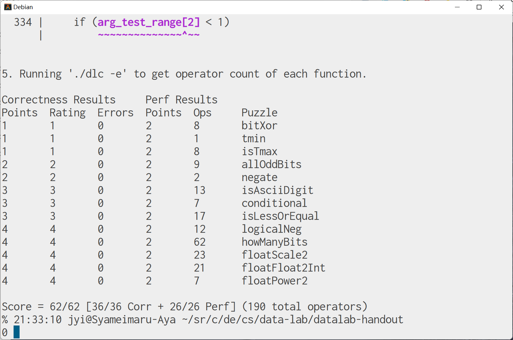

title: CSAPP Data Lab 做题记录（下） date: 2023-10-01 17:48:39
tags:
CSAPP Data Lab 做题记录（下）
摸了好几天，来做浮点部分……
题目列表
floatScale2
传入一个无符号整数，把它当作单精度浮点数，乘二后输出。
很自然地想到提取出符号、阶码和尾数，接着根据是否为规格化的浮点数分情况处理，拼起来返回，比较简单。
unsigned floatScale2(unsigned uf) {
int sign, expo, frac;
int bias = 127;
sign = (uf >> 31) & ((1 << 1) - 1);
expo = (uf >> 23) & ((1 << 8) - 1);
frac = uf & ((1 << 23) - 1);
if (expo == 0xff)
return uf;
if (expo) {
++expo;
if (expo == 0xff)
frac = 0;
} else {
frac *= 2;
if (frac & (1 << 23)) {
expo = 1;
frac &= ~(1 << 23);
}
}
return (sign << 31) | (expo << 23) | frac;
}
floatFloat2Int
传入一个无符号整数 uf，把它当作单精度浮点数，返回它截断后的整数部分。也就是 (int)uf。如果出现溢出，则返回 0x80000000u（书上说这是与 Intel 兼容的微处理器指定的 “整数不确定” 值）。
感觉也比较简单……弄出阶码、尾数之后，暴力移位就行了。
代码里最后根据 sign 决定返回 ans 还是 -ans，而没有考虑最终结果为 INT_MIN，导致计算 ans 时溢出的问题。是因为 32 位的 float 类型无法精确表示 32 位的 INT_MIN，所以这里不用考虑 int 正负表示区间不对称的问题。
int floatFloat2Int(unsigned uf) {
int sign, expo;
unsigned frac;
int ans;
int bias = 127;
int error = 0x80000000u;
sign = (uf >> 31) & ((1 << 1) - 1);
expo = (uf >> 23) & ((1 << 8) - 1);
frac = uf & ((1 << 23) - 1);
if (expo == 0xff)
return error;
expo -= bias;
if (expo < 0)
return 0;
if (expo > 31)
return error;
frac |= (1 << 23);
frac <<= 8;
frac >>= (31 - expo);
ans = frac;
if (sign)
ans = -ans;
return ans;
}
floatPower2
传入一个整数 $x$，返回单精度浮点数 $2x$。如果结果太小则返回 0，太大则返回 +INF。
非常简单，只要改阶码部分，尾数部分保持全零即可。
unsigned floatPower2(int x) {
int bias = 127;
int sign = 0;
int expo = x + bias;
int frac = 0;
if (expo >= 0xff)
expo = 0xff;
if (expo <= 0)
expo = 0;
return (sign << 31) | (expo << 23) | frac;
}
总结
总体来看浮点数部分比整数部分简单，没准是因为前面写整数时把各种运算练得比较熟了？
做完了之后感觉自己对计算机中数字表示理解加深了甚至感觉可以全用位运算来实现各种操作符。
还有就是觉得整数的补码表示与 IEEE754 浮点数的一些性质特别神奇，怎么说不愧是广泛使用的标准。
调试时用了不少之前几乎没用过的联合体（union），应该说终于意识到这个东西怎么用了……
测试结果
